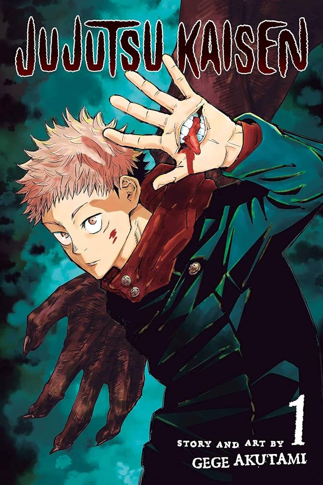

<html lang="en">

</html>

<head>
    <meta charset="UTF-8">
    <meta name="viewport" content="width=device-width, initial-scale=1.0">
    <link rel="stylesheet" href="pagina.css">
    <link rel="website icon" type="png" href="imagens/logo.png">
    <link rel="stylesheet" href="css-geral.css">
    <title>Pagina principal</title>
</head>

<body>
    <header>
        <div class="container">
            <h1>Bem-vindo à Manga Haven</h1> <a href="../tela-inicial/pagina-principal.html"></a>
            <nav>
                <ul>
                    <li><a href="../tela-inicial/pagina-principal.html">Home</a></li>
                    <li><a href="../tela-inicial/sobre-site.html">Sobre</a></li>
                    <li><a href="../tela-de-login/tela-de-login.html">Sair</a></li>
                </ul>
            </nav>
        </div>
    </header>
    <br><br><br><br><br><br><br><br><br><br><br><br><br><br>
    <main>
        <section class="produtos" id="dc">
            <div class="container">
                <h1>Jujutsu Kaisen</h1>
                <div class="grid-produtos">
                    <div class="item-produto" id="jujutsu"> 
                    </div>
                </div>
            </div>
            <div class="item-produto">
                <h5>Jujutsu Kaisen, Vol. 1</h5><br>
                <h5>Avalições:★★★☆☆(5492)</h5><br>
                <h5>Detalhes:</h5>
                <p>Autor:Gege Akutami</p>
                <p>Ano de Lançamento: 1 março 2018</p>
                <p>Descrição: O primeiro volume de Jujutsu Kaisen apresenta Yuji Itadori, um estudante do ensino médio
                    que, após ingerir um poderoso amuleto amaldiçoado, se vê envolvido no mundo das artes ocultas e
                    maldições. Este volume marca o início de sua jornada para combater forças sobrenaturais e descobrir
                    os segredos por trás da maldição. </p> <br>
                <a href="https://www.amazon.com.br/Jujutsu-Kaisen-Batalha-Feiticeiros-Vol/dp/6555122072"
                    target="_blank">Mais
                    Detalhes</a>
                <br>
                <h5>Sobre:</h5>
                <p>
                    é o primeiro volume do popular mangá criado por Gege Akutami. A história segue Yuji Itadori, um
                    estudante do ensino médio que leva uma vida tranquila até se envolver com o mundo das maldições e
                    feitiçaria.
                </p>
                <h4 id="valor">R$29,90</h4><br>
                <a href="../carinho-de-compras/jujutsu.html">Adicionar ao carinho</a><br>
            </div>
        </section>
        <div>
        </div>
        </section>
    </main>

    <footer>
        <div class="container">
            <p>&copy; 2024 Manga Haven</p>
        </div>
    </footer>
</body>

</html>